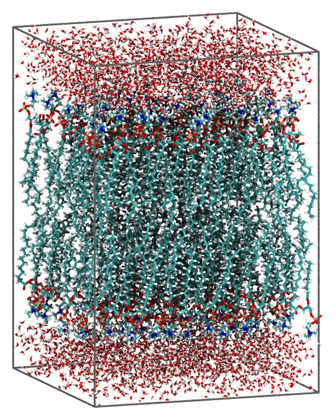
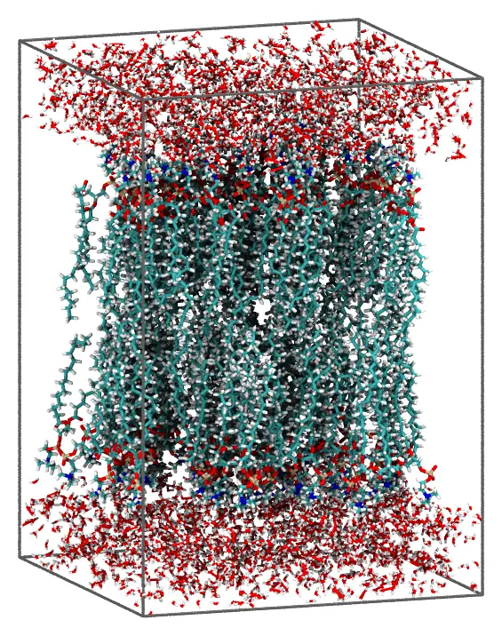

Lipid bilayer
A POPC bilayer in water, with periodic boundary conditions. The lipids of each leaflet are oriented by constraints on two of their atoms: the polar heads point to the water, and the ends of the hydrophobic chains to the middle of the bilayer.

The bilayer seen from the side, with the edges of the periodic cell.
Files: popc.pdb, water.pdb and the input file bilayer.inp.
The lipid
How fast lipids pack depends on their conformation: straight, compact conformations, with the two chains side by side, pack the fastest at the densities of real membranes. What matters most is how narrow the lipid is across its length, since each lipid has to fit in its area of the membrane: a conformation a little wider than popc.pdb takes several times longer to pack, and much wider ones may not pack at the same area per lipid. popc.pdb is one of the conformations of the packmol_lipids set of MolSimTestFiles, which has conformations chosen to pack well for POPC, POPE, POPS, POPG, DPPC, DOPC and DMPC, and describes how they were obtained (download the whole set: packmol_lipids.tar.gz).
In popc.pdb, atom 1 is the nitrogen of the choline (the polar head), and atoms 88 and 131 are the ends of the two hydrophobic chains. The distance from the head to the middle of the chain ends is 26 Å.
The numbers
The area per lipid in a fluid POPC bilayer is about 64 Ų. With 60 lipids per leaflet, the membrane has 60 × 64 = 3840 Ų, a square with sides of 61.96 Å. Each layer of water has 15 Å, with 61.96² × 15 = 57600 ų: at 1 g/mL (29.9 ų per molecule), 1925 water molecules.
The head atoms of the upper leaflet are constrained to be above z = 28 Å, and the chain ends below z = 6 Å. These planes are 22 Å apart, 85% of the length of the lipid, so the lipids stay nearly upright (they can tilt by about 30°), with their heads in a narrow band. Keep these planes close to the length of the lipid: with the heads only 50% of the length away from the chain ends, the lipids slide along their axes, the chains of one leaflet push into the other, and the packing gets stuck.
Command line
The input file bilayer.inp (click to expand)
#
# POPC bilayer in water, with periodic boundary conditions
#
tolerance 2.0
output bilayer.pdb
# Uncomment to write only the initial placement of the molecules to the output file,
# without packing them (to check the constraints):
# check_initial_placement
# Periodic box: 60 lipids per leaflet at 64 Ų per lipid (61.96 Šsides in x and y),
# membrane centered at z = 0, 15 Å of water above and below it
pbc -30.98 -30.98 -45. 30.98 30.98 45.
# Upper leaflet: the head (atom 1, N) above z = 28, the ends of the two chains
# (atoms 88 and 131) below z = 6
structure popc.pdb
number 60
atoms 1
above plane 0. 0. 1. 28.
end atoms
atoms 88 131
below plane 0. 0. 1. 6.
end atoms
end structure
# Lower leaflet: the same, mirrored
structure popc.pdb
number 60
atoms 1
below plane 0. 0. 1. -28.
end atoms
atoms 88 131
above plane 0. 0. 1. -6.
end atoms
end structure
# Water: 15 Å above and below the membrane (the two slabs are continuous
# through the periodic boundary in z)
structure water.pdb
number 1925
above plane 0. 0. 1. 30.
end structure
structure water.pdb
number 1925
below plane 0. 0. 1. -30.
end structure
The constraints inside an atoms ... end atoms block apply only to the atoms listed: here, only the head and the chain ends of each lipid are constrained, and the rest of the molecule follows them. above plane 0. 0. 1. 28. is the half-space 0x + 0y + 1z ≥ 28, that is, z ≥ 28. The chain ends of the two leaflets can meet anywhere between z = -6 and z = 6, so the leaflets interdigitate a little. The water is only constrained by one plane, and the box: the water above the membrane fills the box from z = 30 to its top face, at z = 45, which is in contact, through the periodic boundary, with the water below the membrane.
Check the initial placement first
Uncomment the check_initial_placement line of the input file, and run it as below (see Checking the initial placement): the initial placement of the molecules is written to the output file (bilayer.pdb):

The initial approximation: the lipids are already oriented by the constraints on their head and tail atoms, but molecules may overlap.
Then comment the line again, and run the packing.
Packing
Run it with:
packmol bilayer.inpThe packed system (about 28 thousand atoms) is written to bilayer.pdb, in a few seconds with 14 threads.
Julia
The atom_constraints keyword of structure_type is the equivalent of the atoms ... end atoms blocks: a list of atom indices => constraints pairs.
using Packmolz = [0., 0., 1.] # the normal of the planes# Heads (atom 1) above z = 28, chain ends (atoms 88 and 131) below z = 6upper_leaflet = structure_type("popc.pdb"; number = 60, atom_constraints = [ [1] => AbovePlane(z, 28.0), [88, 131] => BelowPlane(z, 6.0), ],)# The same, mirroredlower_leaflet = structure_type("popc.pdb"; number = 60, atom_constraints = [ [1] => BelowPlane(z, -28.0), [88, 131] => AbovePlane(z, -6.0), ],)water_above = structure_type("water.pdb"; number = 1925, constraints = [AbovePlane(z, 30.0)],)water_below = structure_type("water.pdb"; number = 1925, constraints = [BelowPlane(z, -30.0)],)system = PackmolSystem([upper_leaflet, lower_leaflet, water_above, water_below]; output = "bilayer.pdb", tolerance = 2.0, unitcell = [61.96 0. 0.; 0. 61.96 0.; 0. 0. 90.], # centered at the origin # check_initial_placement = true, # uncomment to only place the molecules)packmol(system)As with the input file, check the initial placement first, with check_initial_placement = true (commented in the code above).
BelowPlane(normal, d) and AbovePlane(normal, d) take the parameters of below plane and above plane.
The Membrane recipe builds bilayers like this one from a few parameters (lipid composition, area per lipid, solvent thickness), with periodic boundary conditions. See Recipes.